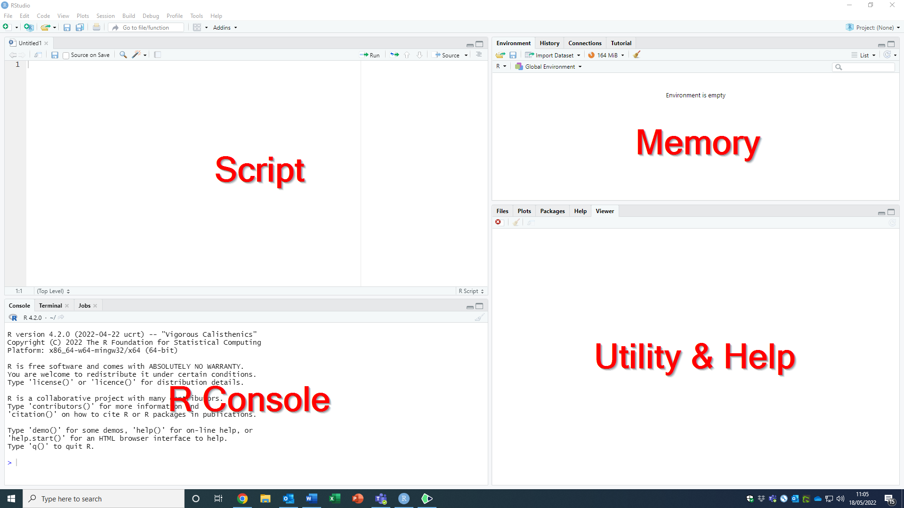

R and RStudio
R is a software for statistical analysis (among others), but we will not work with R directly. Instead, we will be using R via a software called Rstudio, which serves as a user interface. While there is nothing wrong with using R on its own, RStudio makes the life of the users easier.
Understanding the RStudio interface
You have got the latest version of R and RStudio on your computer and are eager to get things going? Great!
If you open R Studio for the first time, it will look like this:

The interface has three parts, the R console, the memory, and the utility and help area. Once you open your first R script (you can do do by clicking on “File”, selecting “New File”, and choosing “R Script”), a fourth (and probably the most important) appears in the top left, the script area (note; when you close all scripts, the script area will disappear again until a new script is opened).

The RStudio interface components
The console
The console is the direct link between RStudio and R. It executes the R code we enter, either manually or by running (part of) a script. With the exception of plots, the output of the code we entered, is also displayed in the console. We will be using the console mostly in the early states of getting used to working with R. We can execute code in the console by typing it in and confirming it via the “Enter” key. Doing so will directly produce the result of the code we entered (if we did it correctly) or an error message (if we managed to botch it up).
The memory
The memory area is one of the many advantages of using RStudio as compared to R only. It has different subsections. The subsection labeled Environment displays all the objects that are currently in R’s memory. Examples of such objects include variables we defined, data we read into R, or models we fit on our data. The list of objects in the Environment is rather handy because we do not need to memorize the names of all our objects, and we can even have a closer look at our more complex objects (e.g., we can have a look at the individual variables in our data object).
The second subsection is the History of our R session. The history contains all the code we sent to the console (irrespective of whether we did it by manually entering code in the console or by running a script). Using the History is handy if we want to trace back what we did, for example to search for errors.
Utility and Help
The Utility and Help area located on the bottom right has five subsections, which can be tremendously helpful, so let’s have a closer look at them.
- Files: This section displays the content of the current working directory. We can use it like the windows explorer to search for and load files.
- Plots: If we create plots, they will be displayed in this subsection.
- Packages: The base version of R comes with a wide range of functions that we can use to handle and analyse data. However, we will frequently want to do things that base R cannot do. In those situations, we will require additional R packages. The Packages section shows, which packages are installed on our computer, and which ones are currently active (more on that later).
- Help: The Help section is very important. We can use it to obtain information on all functions and objects contained in base R and all currently active packages.
- Viewer: We will rarely be using the Viewer when starting to learn R. It can be used to display local html-files that we can create using R.
The Script
The Script area in the top left of the interface is where we do most of our actual work. Here, we can create, save, load, and modify R scripts. If we open more than one script, each one will have its own tab displaying the name of the script (or labeling it as “unnamed” if we have not saved it yet). Clicking on the tabs lets us switch between scripts.